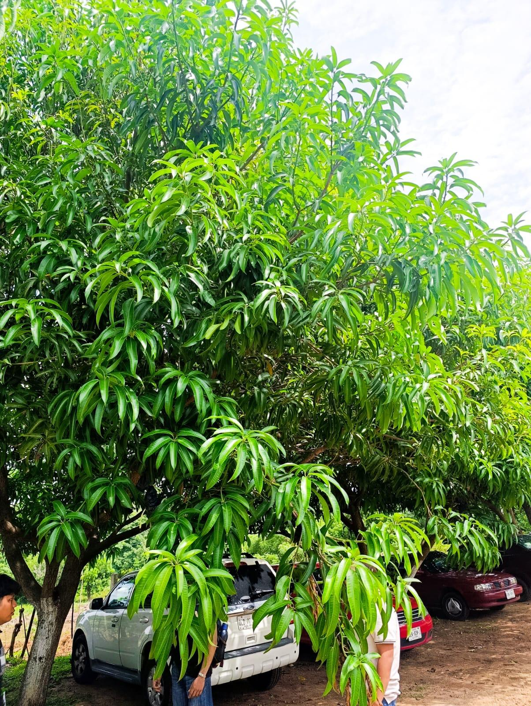
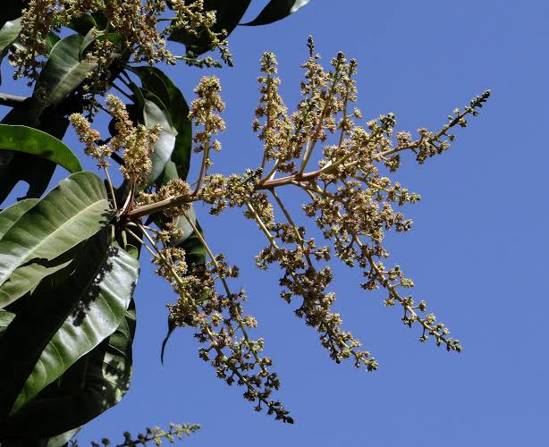
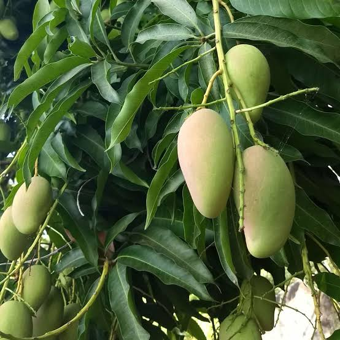

Mango

📸 Galería del Mango



Nombre científico
Mangifera indica L..
Familia
Anacardiaceae
Descripción
El mango ataulfo es un árbol frutal de importancia alimentaria y medicinal. Puede crecer en zonas tropicales y produce frutos comestibles de gran importancia en el soconusco mexicano. Tiene hojas simples , alterna , lanceolada , de margen entero , apíce acuminado, base cuneada y nervadura pinnada.
Usos
El fruto se utiliza principalmente como alimento y se pueden hacer refrescos , pasteles, y licuados . Sus hojas también son utilizadas tradicionalmente para preparar té y cura dolores intestinales es antinflamatorio , regula el metabolismo y aporta vitaminas C.
📍 Lugar donde fue encontrada
Municipio de Huehuetan, Chiapas.